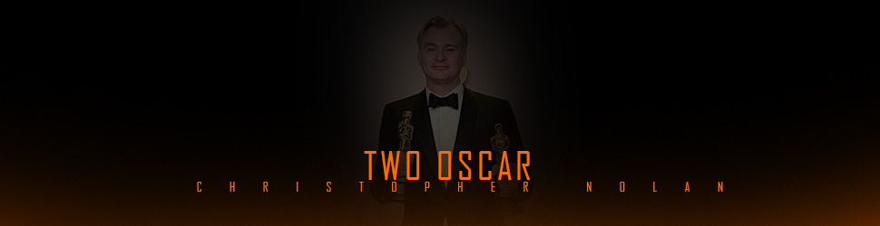
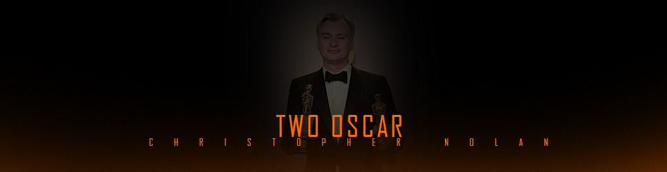

Sir Christopher Edward Nolan is a British and American filmmaker. Known for his Hollywood blockbusters with complex storytelling, he is considered a leading filmmaker of the 21st century. Nolan's films have earned over $6 billion worldwide, making him the seventh-highest-grossing film director of all time. His accolades include two Academy Awards, a Golden Globe Award and two British Academy Film Awards. Nolan was appointed a Commander of the Order of the British Empire in 2019, and received a knighthood in 2024 for his contributions to film.
Early life
Christopher Edward Nolan was born on 30 July 1970, in Westminster, London. His father, Brendan James Nolan, was a British advertising executive of Irish descent who worked as a creative director. His mother, Christina Jensen, was an American flight attendant from Evanston, Illinois; she would later work as a teacher of English. He has an elder brother, Matthew, and a younger brother, Jonathan, also a filmmaker. The three brothers were raised Catholic in Highgate and would spend their summers in Evanston. Nolan also spent time living in Chicago during his youth, and he holds both UK and US citizenship.
1993-2003: Early career and breakthrough: After earning his bachelor's degree in English literature in 1993, Nolan worked as a script reader, camera operator and director of corporate films and industrial films.He directed, wrote and edited the short film Larceny (1996), which was filmed over a weekend in black and white with limited equipment and a small cast and crew. Funded by Nolan and shot with the UCL Union Film society's equipment, it appeared at the Cambridge Film Festival in 1996 and is considered one of UCL's best shorts. For unknown reasons, the film has since been removed from public view. Nolan filmed a third short, Doodlebug (1997), about a man seemingly chasing an insect with his shoe, only to discover that it is a miniature of himself.
MEMENTO AND BATMAN
Nolan’s breakthrough came with the 2000 film Memento, a sleeper hit that he adapted from a short story written by his brother Jonathan Nolan. It used a destabilizing reverse-order storyline to mirror the fractured mental state of its protagonist, a man with short-term amnesia who is trying to track down the person who murdered his wife. The film was a critical and popular success and garnered the Nolan brothers an Academy Award nomination for best original screenplay. Nolan followed up with Insomnia (2002), a thriller set in the Alaskan wilds, which starred Al Pacino as a compromised police detective.
In 2003 Warner Brothers enlisted Nolan to direct an installment of the Batman franchise, the first since 1997’s poorly received Batman & Robin. Nolan’s highly anticipated Batman Begins (2005), starring Christian Bale, focuses on the superhero’s origins and features settings and a tone that are grimmer and more realistic than those of previous Batman films. Hugely well received, it became a forerunner of a new trend in superhero films: a move toward realism and away from the genre’s comic-book roots.
THE PRESTIGE 2006
Nolan’s next project was The Prestige (2006), a story of two warring illusionists in early 20th-century London. He then began work on a second Batman film, which he wrote with his brother. The Dark Knight (2008) leans even more heavily on the moral and structural decay of its setting, fictional Gotham City, and it revives such classic Batman villains as the Joker (played by Heath Ledger). The Dark Knight became one of the highest-grossing movies of all time. His Batman series concluded with the grandiose The Dark Knight Rises (2012), in which the superhero’s exploits are set against a backdrop of civil unrest.
INCEPTION , DUNKIRK , AND OPPENHEIMER
The release of Inception (2010) marked the realization of a script Christopher Nolan had begun a decade prior. It starred Leonardo DiCaprio as a corporate spy who steals secrets via a technology that allows him to enter people’s dreams. The film turns on this character’s attempt to move past the boundaries of the technology in order to actually plant an idea in a dreamer’s head. Inception was another commercial and critical hit and earned Nolan a second Academy Award nomination for best original screenplay. Nolan also helped develop the story for the Superman reboot Man of Steel (2013).
 
 .jpg)


_theatrical.jpg)